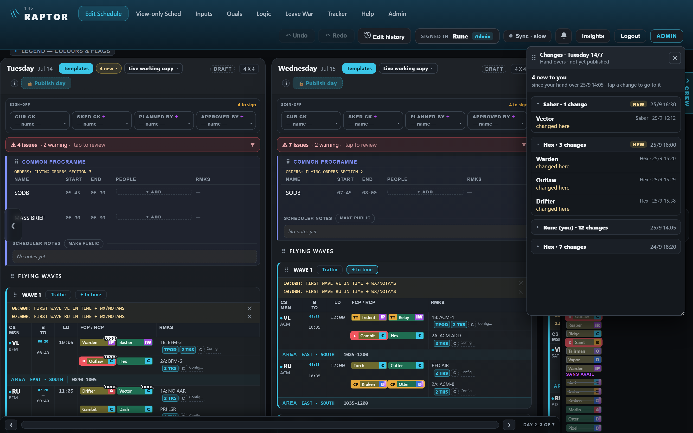
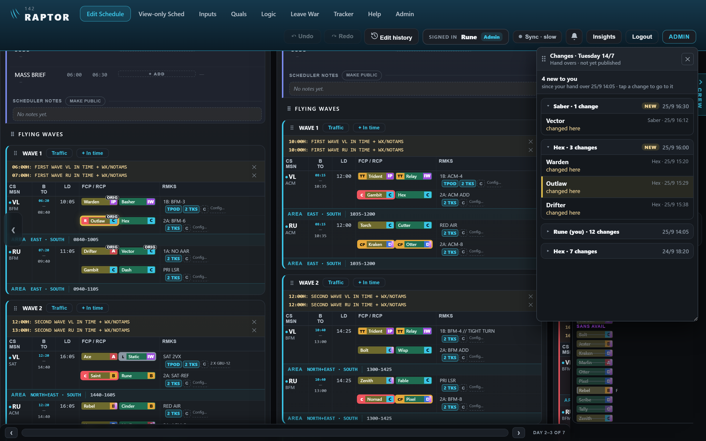
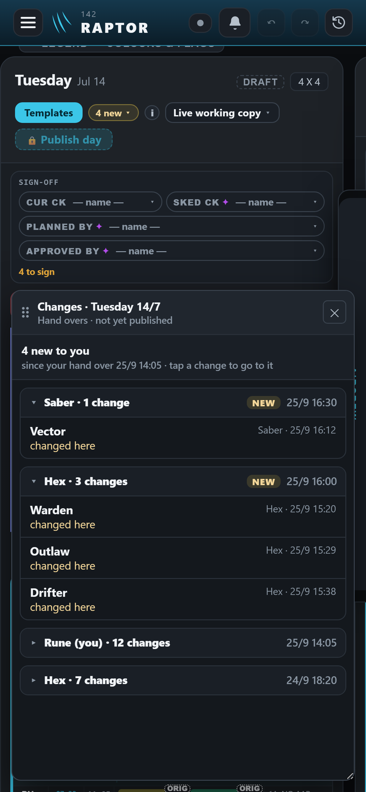
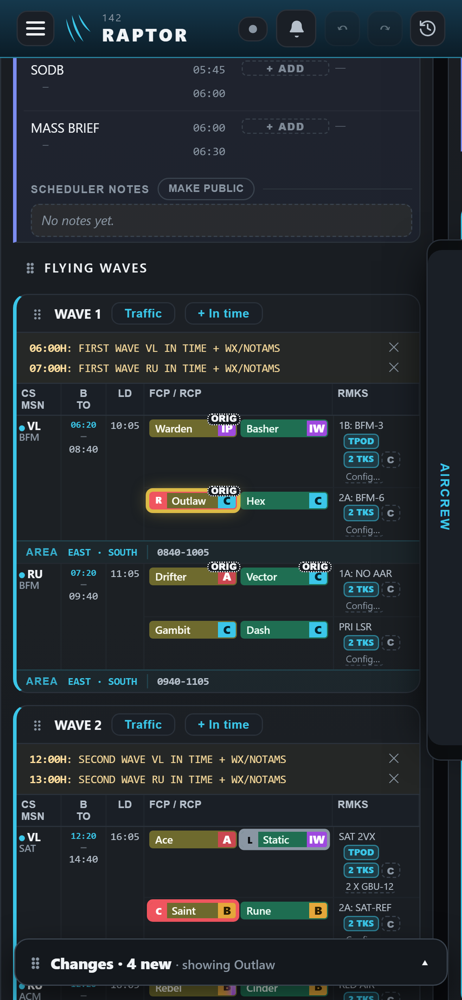

The changes window — hand overs, movable and resizable (mock-up)
Drawn on the real app. Rune is signed in and opens Tuesday (not yet published). The window uses the same design as the ALL AVAIL window you already approved: the six-dot grip to move it, a corner to resize it, and the schedule behind stays usable.
Desktop — the window open
- Every hand over of the day is listed, with who, how many changes and the date and time (25/9 16:30).
- The ones new to you carry a NEW tag and are open; the rest are folded (tap a heading to open or fold it) — e.g. Rune's own hand over at 25/9 14:05, and one from yesterday, 24/9.
- Drag the ⠿ bar to move it; drag the bottom-right corner to resize it.

Desktop — after tapping "Outlaw"
The schedule behind scrolls to Outlaw and lights it up; the window stays open with that line marked, so he can work through the list and edit the schedule at the same time.

Phone


What the phone gives up
- No resizing (a finger resize corner was ruled out for the ALL AVAIL window, D77).
- The list and the schedule are not both fully in view at once — the panel shrinks to a bar while you look at a change.